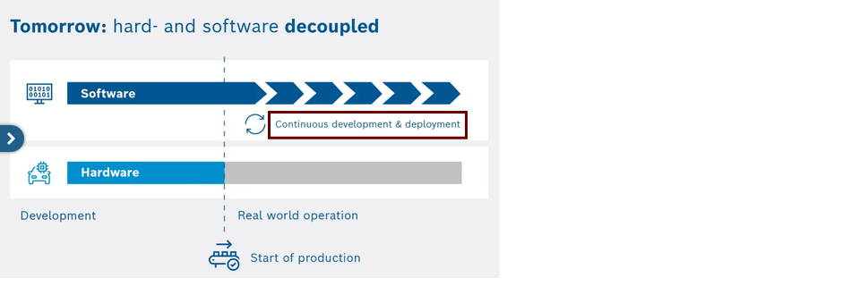
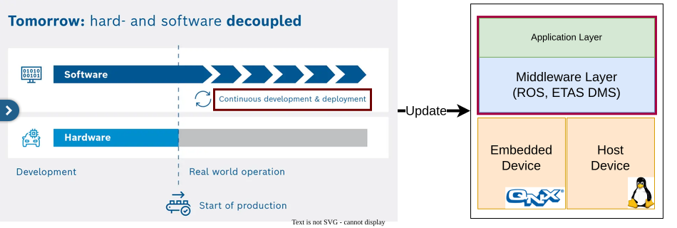

Safe Engineering
From Cars to Clinics
Dr. Fabian Franzelin · 2026-09-24
Talk · W2-Professorship Computer Science · Reutlingen University
Automotive Safety


All deployed software from Start of Production (SoP) must be safe.
Safety is the absence of unreasonable risk (ISO 26262).
The Setup
The middleware
- ~1M LOC in total
- Tooling (e.g., the digital twin core): ~560k LOC
- Includes the digital twin, which is safety-relevant
Release Cadence
- every three months
Development
- ~100 engineers, continuously
Required artifacts
- Complete specification and test coverage reports
- Architecture documentation
- Safety and security manual
- Tool development plan
- Engineering process
- etc.
→ certification through independent party
From Research to Transferable Product
Processes are important
- Repeatable outcomes across teams and releases
- Traceable evidence for safety and certification
- Auditable by independent parties
Docs-as-Code
- Version control
- Continuous integration
- Code reviews
- Plain text formats


Safety is a mindset
- Everyone's concern
- It affects every part of the product

Conclusion - Cars to Clinics
Shared safety principles
- Defined processes
- Change management
- Configuration management
- Risk-based development
- Traceability
- Safety evidence
Transferable practice
- Processes (e.g., IEC 62304 ↔ ISO 26262 mapping)
- Tools (docs-as-code, CI, traceability)
- Digital twin concepts
Colophon
The complete middleware is released and qualified according to ISO 26262 since May 2026.
- Slides in Org, diagrams via PlantUML and draw.io, rendered with Reveal.js, versioned on GitHub.
- A demo application of a medical device sends data to a dashboard alongside these slides.
- Everything runs in a Docker container.
Repository & Questions
These slides. This demo. Reproducible. Public domain.
github.com/fabianfranzelin/vernetzte-systeme-in-der-medizin
Thank you --- questions?
Scan to open the repository